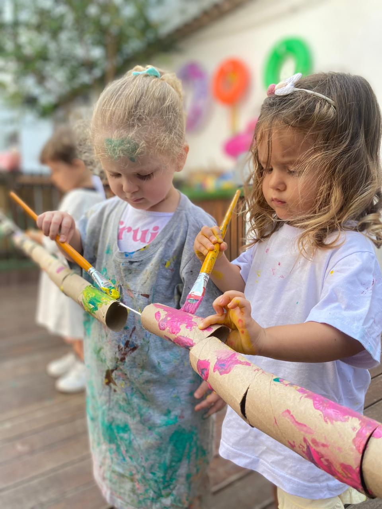

Reunião de entrada
Conhecimento da história, da rotina e das necessidades da família.
Escola e família
A escola e a família cuidando da mesma jornada.
Um relacionamento humano, próximo e consultivo para acompanhar as mudanças que fazem parte da primeira infância.

Proximidade que orienta
A escuta ajuda escola e responsáveis a compreenderem juntos o momento da criança e a construírem caminhos coerentes.
Conhecimento da história, da rotina e das necessidades da família.
Presença próxima durante a adaptação e mudanças importantes.
Trocas relevantes sobre o cotidiano e o desenvolvimento.
Conversas sobre temas reais da primeira infância.
Temas da vida real
Conheça a proposta de relacionamento do Jardim com as famílias.
Conversar com a equipe